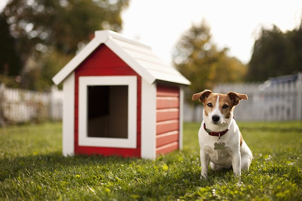
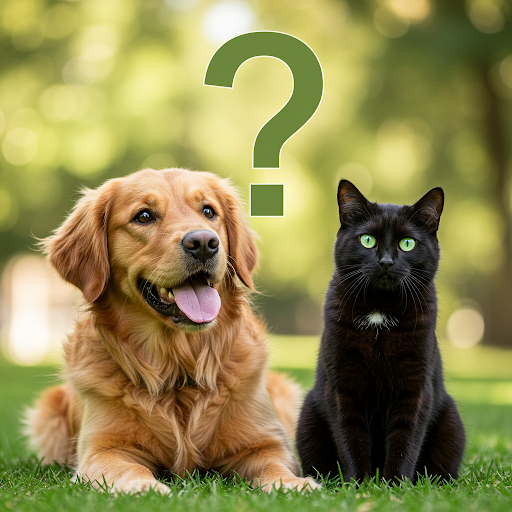
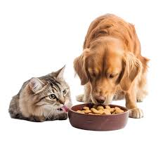

Adoção
Castração

Achados e perdidos

Alimentação do seu pet
FALE CONOSCO
(19) 3467-2344
O porquê de adotar seu pet
Quando você adota um pet, está dando uma nova chance a um animal que só precisa de carinho e cuidado. Além de transformar a vida dele, você ganha um companheiro leal, que traz alegria, afeto e benefícios para sua saúde e bem-estar. Adotar é escolher o amor, a responsabilidade e a esperança. É mudar duas vidas de uma só vez: a dele — e a sua.